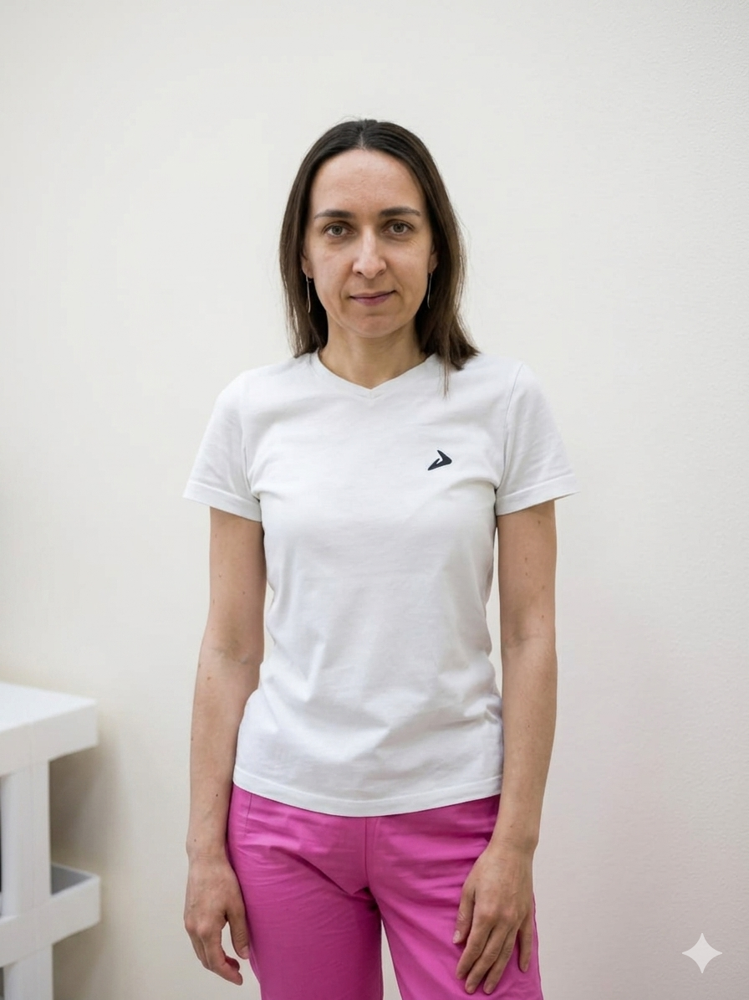

Индивидуально под вас
Сначала разбираем запрос, тип кожи, образ жизни. Потом подбираю протокол и средства — не наоборот.
Эстетист · Тольятти
Глубокий уход за лицом и телом — забота, которая заметна.
Подбираю ритуал именно под вашу кожу: расслабление, отдых и видимый результат за один сеанс.

01 — Обо мне
Работаю мягкими, безболезненными техниками. На сеансе вы не просто получаете процедуру — вы возвращаете себе время на отдых, чувствуете тело и кожу, выходите с ощущением, что о вас позаботились.
02 — Подход
Не косметология «на конвейере» и не просто массаж. Я соединяю профессиональный уход, остеопатические техники и заботу — так, чтобы результат был и на коже, и в самочувствии.
Сначала разбираем запрос, тип кожи, образ жизни. Потом подбираю протокол и средства — не наоборот.
Учитываю анатомию: мышцы, фасции, лимфу, крепления. Поэтому результат держится дольше, чем после обычного массажа.
Мягкие техники, малоинвазивные составы, быстрый возврат к обычной жизни — без выпадения из социальной активности.
На сеансе клиенты восстанавливаются и расслабляются — многие говорят, что чувствуют себя как после хорошего СПА.
03 — Услуги
Семь направлений: от подбора домашнего ухода до глубокой работы с лицом методом остеоэстетики. Нажмите на услугу — раскроется подробное описание.
Не уверены, какая процедура подойдёт именно вам? Напишите — помогу выбрать.
05 — Отзывы
Лиля, привет. Мне очень понравился вчерашний сеанс. Это что-то волшебное))) так с мои лицом еще никто не работал. После сеанса было такое расслабление! Впервые за наверное год, ушла зажатость в жевательных мышцах и перестал щелкать сустав. Мне кажется лицо прям расправилось и засияло ❤️ и спала сегодня так спокойно и крепко. Спасибо большое тебе 🙏
Приветик, еще раз. я прям всю эту неделю старалась за своими ощущениями наблюдать. вот думаю, надо тебе все-таки написать. ну что-то, прям конкретно, что -то такого сильного я не почувствовала, ну, возможно, это потому, что у меня каких то там проблем не было до этого. то есть, я не страдала болями в спине, либо еще с чем то. что я по себе сейчас отмечаю, замечаю, что у меня как будто больше энергии, больше сил, внутренних, я легко и хорошо засыпаю,высыпаюсь. такое вот состояние, короче, как то так
Привет после сеанса чувствую себя хорошо. Больше энергии как будто) по лицу заметила подтянулся овал и скулы как будто стали другие, более упругие что-ли и подтянутые. Спасибо, приду ещё 😊
Посетила остеосеанс. Много слышала раньше об этом от своих знакомых, коллег по работе, которые уже обращались с остеоэстетики. И усшила. Я сама долго думала и решилась. К Лиле. К ней я уж обращалась по косметологии: чистки лица и прочие процедуры. И всегда оставалась довольна. Наверное поэтому и сейчас решила пойти именно к ней, так как уху доверяю ей. Хочу отметить, что Лиля всегда делает все спокойно, бережно, аккуратно, относится к пациенту. После сеанса у меня появилось чувство «себя». Расслабилась. Правда! Расслабилась прям так. тело разливалось ещё несколько часов после сеанса, потом ясность в голове и появилось немного больше энергий, сил, особенно по утрам. думала Возраст и Весна. поэтому вот так 😊 Вывод такой: надо продолжать. Занимайтесь собой и своим телом, здоровьем -нужно. Будем работать!! Спасибо, Лиля! Она очень бережный наставник, подскажет, научит как правильно, без давления. Спасибо большое До новой встречи!
04 — Контакты
Принимаю в кабинете в Тольятти. Чтобы записаться или задать вопрос — напишите в Telegram.